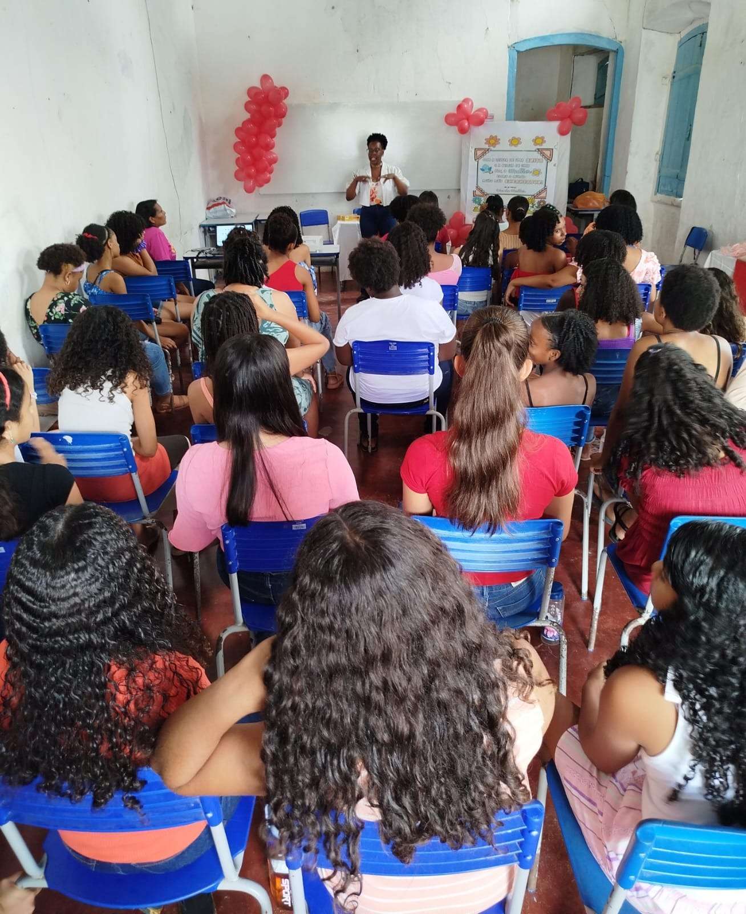

2006.1–2010.8
A primeira turma
Ivonildes ingressou em 2006.1, integrando a primeira turma do Curso de História no Centro de Artes, Humanidades e Letras, em Cachoeira. Sua memória ressalta o caráter pioneiro daquela experiência e a participação dos primeiros estudantes na construção da identidade da UFRB na cidade.
Depoimento
Memórias de uma pioneira
Você hoje
Da primeira turma à educação pública

Secretaria Municipal de Educação
Atualmente, Ivonildes é servidora pública municipal. Atua como professora e, no momento do registro para o Memorial, exerce função na coordenação técnico-pedagógica da Secretaria Municipal de Educação de São Félix, no segmento dos Anos Finais do Ensino Fundamental.
A fotografia registra Ivonildes em uma atividade profissional atual.
Como não foram informados outros momentos pós-UFRB, o mapa apresenta por enquanto seu ponto atual em São Félix.
Uma trajetória que liga a primeira turma do curso à atuação contemporânea na educação pública do Recôncavo.